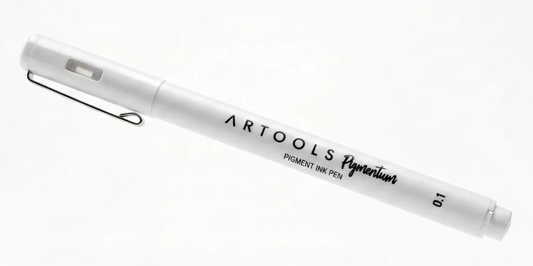

Pigment ink pen · 0.1 mm
Cada traço, preciso.
Ponta de 0.1 mm para o detalhe que o desenho técnico exige. Tinta pigmentada, linha Pigmentum da ARTOOLS.
Role para desenhar
02 — A ponta
Um décimo de milímetro absoluto.
Uma ponta de aço calibrada para traçar linhas de um décimo de milímetro, idênticas do primeiro ao último traço. A tinta pigmentada assenta na fibra do papel e fica: à prova d'água e resistente à luz.
- Ponta
- 0.1mm
- Traço
- 400m
- Secagem
- 2s
aço inox calibrado
de linha por carga
sem borrar no marcador

Pigmentum
Pigment ink pen · 0.1

03 — A tinta
Uma vez no papel, para sempre.
Pigmento de alta densidade em suspensão: preto profundo, seca em 2 segundos e não cede à água nem à luz. Não acredite em nós — teste na folha.
A folha é interativa-
Pigmento
0.2µm
Partículas que não penetram: assentam e se fixam na fibra do papel.
-
Secagem
2s
Seca ao toque em dois segundos. Sem borrão na mão de quem desenha.
-
À prova d'água
100%
Passe aquarela ou marcador por cima: o traço continua lá.
-
Resistente à luz
8/8
Escala Blue Wool 8: não desbota sob luz direta, nem com os anos.
04 — Especificações
Projetada como um desenho técnico.
05 — Sua Pigmentum
Seu próximo traçocomeça aqui.
- Envio em 24 h
- Troca em 30 dias
- Garantia de 1 ano